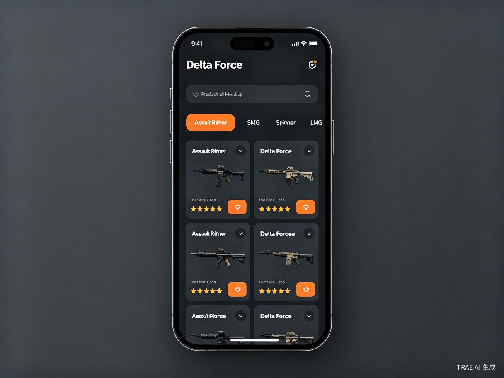

三角洲行动改枪码一站式聚合平台 —— 让每一把枪的完美配置，触手可及。
"枪境"取自"枪械之境"——一个汇聚所有改枪方案的专属空间。英文名 GunRealm 寓意玩家进入一个属于自己的枪械改装领域，在这里可以快速发现、收藏和分享三角洲行动的改枪码，告别碎片化搜索的时代。
三角洲行动玩家每次想优化枪械配置，都不得不在多个网站、视频平台和主播社区之间反复搜索改枪码，信息分散、版本过时、质量参差不齐，找到一套靠谱的方案往往要花费十几分钟甚至更久。
作为三角洲行动的资深玩家，我深刻体会到改枪码的获取流程极其低效。当前改枪码散布在 3DM、游侠、7724 等游戏攻略站[1][2][3]，以及 B站、抖音等视频平台的主播内容中。海外虽有 deltaforcedb.com 等数据库站点收录了 244 套配置[4]，但中文社区缺乏一个统一、活跃、带社区评价的改枪码聚合平台。灵感来源于"为什么不能有一个地方，把所有好用的改枪码集中起来，一键复制导入？"
一款跨平台改枪码聚合工具，以移动端 App 为核心，同步提供微信小程序和 Web 网站，内置改枪码搜索引擎、社区评分体系、主播认证方案库和一键复制导入功能。

每周游戏时长 10 小时以上，频繁调整枪械配置以适应不同地图和模式（烽火地带 / 全面战场）的中重度玩家，是产品的核心用户群。
刚入坑或赛季更新后回归的玩家，对当前版本强势枪械和配件搭配缺乏认知，需要现成的高质量方案快速上手。
需要发布和推广自己改枪方案的主播与攻略作者，希望有一个集中展示、获取粉丝反馈和建立个人品牌的平台。
参与排位赛或战队对抗的硬核玩家，需要针对特定战术场景（如室内 CQB、远距离狙击）精细调校枪械配置。
新赛季更新后，玩家想快速了解版本强势枪械及对应改枪方案，一键复制导入游戏。
游戏中遇到特定地图（如室内近战图），需要切换适配的枪械配置，临时搜索对应场景方案。
关注的主播发布了新改枪视频，想在平台内直接获取改枪码，无需翻评论区或跳转外链。
如果没有枪境，用户现在面临以下不便：
当前改枪码获取流程：打开浏览器 → 搜索"三角洲改枪码" → 翻阅多个网页 → 对比不同方案 → 手动复制代码 → 切回游戏导入。整个过程平均耗时 10-15 分钟，且无法保证方案质量。
三角洲行动作为腾讯旗下热门战术 FPS，月活用户规模庞大。改枪码是玩家的高频刚需，围绕这一需求可构建可持续的商业闭环：主播认证方案付费推广、品牌联名改枪方案、Pro 会员高级功能（如方案对比分析、个人配置云同步）、以及游戏周边电商导流。平台掌握改枪方案的分发入口，即掌握了连接玩家与游戏生态的关键流量节点。
将改枪码获取时间从平均 10-15 分钟压缩至 30 秒以内。通过结构化搜索引擎、场景化标签体系和社区评分机制，玩家可以按枪械类型、游戏模式、使用场景、评分排序等多维度精准筛选，一键复制导入。同时为主播和攻略作者提供内容沉淀与粉丝运营阵地，将一次性视频内容转化为可持续访问的方案库，提升内容的长尾价值。
枪境不仅是一个工具，更是一个游戏知识社区。它将分散在互联网各处的改枪经验系统化沉淀，降低新手玩家的入门门槛，让每一位玩家都能平等地获取高质量的枪械配置方案。同时，通过主播认证机制和社区评价体系，建立改枪方案的质量标准，推动游戏攻略内容从"碎片化发布"走向"结构化共享"，为整个三角洲行动玩家社区创造长期知识资产。
枪境的终极愿景：成为三角洲行动玩家改枪的第一入口——当玩家想改枪时，第一个想到的不是去搜索，而是打开枪境。